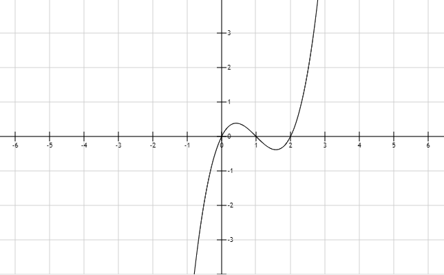

机器学习
Machine Learning
什么是机器学习
机器学习是用数据或以往的经验，以此优化计算机程序的性能标准。
A computer program is said to learn from experience E with respect to some class of tasks T and performance measure P, if its performance at tasks in T, as measured by P, improves with experience E.
小游戏：人肉学习
规则：程序会随机生成一个 0到1之间的小数，你要尽可能准确地猜测它的大小
提示：每次猜测后程序都会告诉你一个指标，指标的大小反映了你猜测误差的大小
PS：我也没那么严格，你把指标降到0.0001以下就算你赢了
刚才发生了什么
- T - tasks
- 尽可能准确地猜出数字大小
- P - performance measure
- 误差指标
- E - experience
- 你多次猜测后的获得的经验
小结：机器学习工作原理
所有机器学习都是这3步：
- 确定目标
- 量化误差
- 迭代
三类基本算法
- 线性回归 (linear regression)
- 分类 (classification)
- 聚类 (cluster)
线性回归
linear regression
根据一些变量的值来预测另一些变量的值（连续变量），例如根据面积、房龄预测房屋售价
它就像是建立一个$y$关于$x$的方程，只要输入特征变量($x$)，就能预测结果($y$)
一个小学数学水平的案例
已知在一个平面坐标系内有一些点，它们的$(x,y)$坐标如下：
| $x$ | 0 | 2 | 4 | 8 | 16 |
| $y$ | 1 | 5 | 9 | 17 | 33 |
如果告诉你这个平面上还有一个点，它的$x$坐标是10，那么你觉得他的$y$坐标该是多少？
数字太抽象了
我们通过可视化来观察一下
现实往往要复杂一些

不是每个点都正好在直线上
$y=kx+b$，$k$和$b$是你需要猜的数字
- 定义目标：用一个函数尽可能地拟合这些点
- 量化误差：loss=点到直线的距离（垂直方向上）
- 迭代：不断调整$k$和$b$，让loss尽量小
结合刚才玩过的智障游戏，再想一想这三个步骤
- 确定目标
- 量化误差
- 迭代
更复杂的情况
- 多个特征变量：$y=2x_1-5x_2$
- 非线性：$y=x^3-3x^2+2x$

分类
classification
二分类问题
依然通过线性回归预测$y$的值：
当$y$超过某个阈值时，则认为它是第一类；
当$y$未达到某个阈值时，则认为它是第二类
多分类问题
转变为二分类问题来解决，以三分类为例：
- 判断是/不是第一类，得到一个概率值$P_1$
- 判断是/不是第二类，得到一个概率值$P_2$
- 判断是/不是第三类，得到一个概率值$P_3$
- 看$P_1 P_2 P_3$哪个最大就是哪个
聚类
cluster
聚类就是把一个数据集分成若干个子集，每个子集中的样本拥有相似的属性
它是一种 非监督学习
| 算法 | 类别 | 备注 |
|---|---|---|
| 回归 | 监督 | 要告诉机器每个$x$对应的$y$ |
| 分类 | 监督 | 要告诉机器每个样本对应的类别 |
| 聚类 | 非监督 | 不用告诉机器哪些样本是同一类 |
案例：鸢尾花的花瓣
已知有三个品种的鸢尾花，它们花瓣的长度和宽度各不相同。现有150朵鸢尾花花瓣的长宽数据，请问你能否把它们按品种归类？
刚才发生了什么
- 目标：在二维空间中找到三个中心点，让样本点到某个中心点的距离尽量近
- 量化误差：loss=样本点到中心点的距离
- 迭代：重新选择中心点，让loss尽量小
机器学习小结
当你手中有了若干样本的数据，你就可以用机器学习做这些事情：
- 回归：根据一些变量的值来预测另一些变量的值（连续变量），例如根据面积、房龄预测房屋售价
- 分类：根据一些变量的值来预测其种类（离散变量），例如根据三围预测性别
- 聚类：根据一些变量的值把样本分为若干类，例如根据对电影的评分为你推荐感兴趣的人（协同过滤）
take a 5-minute break
be free to ask me any question
下节预告：论文交流